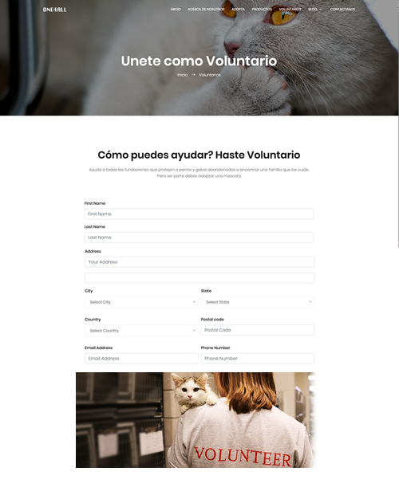

Servicio de Adopción
En FOOTPRINT podras darle hogar a un animalito abandonado
Si el usuario está interesado en adoptar, este debe escoger en la plataforma la mascota que desea adoptar, diligenciar un formulario el cual será analizado y pre-aprobado por la plataforma tecnológica, basado en las políticas de adopción definidas para las fundaciones.
Servicio de
Apadrinamiento
Para aquellos usuario que desean apadrinar una mascota, puede seleccionarla en el listado y realizar su contribución, la plataforma contará con diferentes modalidades: mensual, trimestral, semestral, anual y también se contempla una contribución por única vez. la plataforma está diseñada para recibir un contribución mínima de $100.000 pesos en cualquiera de sus modalidades.
Para aquellas contribuciones que son periódicas la plataforma contará con un sistema de partidas abiertas, la cual generará correos electrónicos y/o mensajes de texto que envíe alertas a los usuarios con los pagos pendientes por realizar.

Voluntario Independiente
En FOOTPRINT Puedes llegar a ser un Voluntario Independiente en donde podras recibir subsidios e incentivos por apoyar la causa de adopcion y apadrinamiento haciaendo que las demas personas nuevas aprticipen activamente en dichas actividades.
Contaras con un sistema de registro completo en donde podras diligenciar tus datos personales.
Servicio de
Localización de Mascotas
Footprints permite que una persona que haya adquirido una mascota por medio de la plataforma pueda realizar una búsqueda de su mascota a través del servicio de geolocalización usando el collar suministrado por la fundación en caso que lo haya adquirido, ubicándola de manera precisa para una rapida ubicación.
Ver MásMascotas Extraviadas
En FOOTPRINT Puede hacer publicar la perdida o extravio de su mascota, asi como disponer del botón de pánico para su uso. el sistema de FootPrint automáticamente generará y enviará correos a usuarios registrados con el mensaje de alerta, como también realizará publicaciones de anuncios a redes sociales con la desaparición y recompensa según lo establecido por el dueño de la mascota.
Saber Más10000
Mascotas registradas
2394
Nuevos dueños
1439
Nuevos Voluntarios
933
Mascotas encontradas
Cuantas mascotas hay en el mundo abandonadas?
Según la fundación Día de los Animales Callejeros existen 600 millones perros y gatos abandonados en las vías del mundo.
En Colombia sucede el abandono animal?
En las calles de Colombia hay más de un millón de animales domésticos (perros y gatos los más comunes). Solo en la ciudad de Bogotá entre los años 2010 y 2016 fueron abandonados 33 mil animales.
Cómo ayuda FOOTPRINT?
El propósito del proyecto ONE4ALL es FOOTPRINT, que es una plataforma tecnológica que permite la adopción y apadrinamiento de animales domésticos abandonados en el país (Colombia), como también la disposición al recibo de donaciones y prestación de servicios.
OTROS SERVICIOS EN FOOTPRINT
Servicio
de Veterinaria
Escoje entre las más de 300 Veterinarias afiliadas a FOOTPRINT para mantener sano a tu mascota.
Servicio
de Peluqueria
Dale a tu mascota los mejores tratamientos de belleza y corte de pelaje
Servicio
de adiestramiento
El adiestramiento es la principal herramienta para cambiar la conducta de un perro a lo largo de la vida de éste. Se produce un cambio de comportamiento que perdura en el tiempo como resultado de diferentes experiencias que sufre el animal.
Servicio
de Guarderia
Para las personas que están ocupadas la mayor parte del día, que viajan o que manejan extensas jornadas de trabajo, tener una mascota en casa es una responsabilidad que en muchas ocasiones desatienden. Para evitar que su animal pase muchas horas de soledad existen guarderías, colegios e inclusive spas que recibirán a su mascota.
Venta de
Alimento
Encuentra una variedad de alimento para tu mascota en un solo lugar. Ingresando a FOOTPRINT y antójate de la variedad de productos alimenticios para perros y gatos a un precio especial.
Venta de
productos para mascotas
Encuentra todo para tu mascota en un solo lugar. Ingresando a FOOTPRINT y antójate de la variedad de productos para perros y gatos.
Servicio de
Incentivos y subsidios
La Plataforma contará con un módulo para la administración y uso de incentivos obtenidos por la gestión de adopciones y apadrinamientos que generen los voluntarios independientes.
Ayudanos a que más gente se una a esta buena causa contra el abandono animal y obten incetivos para mejorar tu calidad de vida y la de tu mascota.
Envianos un Mensaje
Tus dudas, comentarios y aportes son importantes para nosotros y un animalito te lo agradecerá.